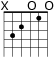
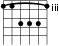

Generating Guitar Chord Diagrams
One day I wanted to add a feature to Guitar Unleashed which exists in some of the better guitar tab sites. When a user hovers over a chord, they are shown a diagram representing the guitar fret with overlaid finger positions required to produce this chord. Many of the most popular sites do this by showing a crude, plain-text representation of the chord.
For example, a C chord is shown as follows:
e ---|---|---|---|---|
B -x-|---|---|---|---|
G ---|---|---|---|---|
D ---|-x-|---|---|---|
A ---|---|-x-|---|---|
E ---|---|-o-|---|---|
Typeset guitar chord representation looks very different. Two most popular variants of the C chord would appear above the staff with small symbols that look something like this:
 
Such images have many benefits as compared to the plain text version:
- Convention: many guitar players are used to learning from sheet music, so this chord notation is familiar to them.
- Readability: the image representation is more compact and more pleasant to read.
- Completeness: the image version has an easy way to display barre chords and specify fingerings (not pictured)
True to Guitar Unleashed's mission of being a truly usable guitar chords site, I decided to display typeset fret diagrams. For the implementation, a program would pre-generate images on the server based on the encoded chord shape and then serve these images dynamically via JavaScript. Unfortunately, I found no software to generate such images for all popular chords, so I ended up developing my own.
From some brief research, I decided that lilypond fret diagrams are the most elegant way of creating such images. The alternative was to use GCHORDS whose output I liked less, and which required depending on TeX. Typically lilypond typesets an entire piece of sheet music on a staff, with clefs, key signatures, etc. After discovering a really great lilypond bundle for textmate, I managed to get rid of these unnecessary features and display just a fret diagram. The following python-parametrized lilypond template does the trick:
\include "lilypond-book-preamble.ly"
\version "2.10.0"
\markup
\fret-diagram-terse #"%(chord_markup)s"
Then, using lilypond's fret diagram encoding, a python script replaces
%(chord_markup)s with the desired markup. Lilypond's markup is very
terse but mostly manageable. Sample markup for a C chord looks like
this: x;3;2;o;1;o;, while the barre version looks a little bit more
bizarre, like this: 3-(;3;5;5;5;3-);.
My python program contains a list of chord shapes for the most popular chords, encoded in the manner above, then outputs images for each chord and variant into a directory. I've made it available for download, in case your next project needs generated fret diagrams with a highly customizable look. You can also see the diagrams live at guitarunleashed.com.